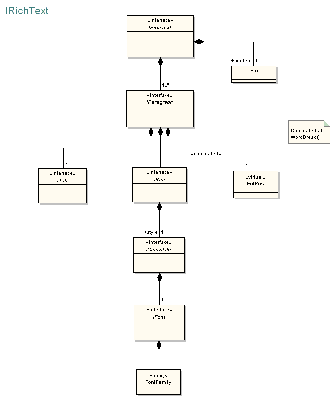

TE::IRichText Class
IRichText is an interface class for handling multistyled text. TextEngine handles rich texts (measuring, drawing,...) through this interface. Beside the declarations of pure virtual methods the interface implements some usefull methods for common problems.
class IRichText
Members
Public Methods
Protected Methods
Public Methods
| Method | Description |
|---|---|
| AddParagraph | Pure virtual function. Appends a paragraph to the paragraph list of rich text. |
| CopyAsSimple | Implemented method. It has ANSI and Unicode version. Makes a multiline "simple text". Converts texts for Archicad 8.1 and before. |
| GetCharSpaceFactor | Pure virtual function. Returns the current value of character spacing factor. |
| GetContent | Pure virtual function. Returns the content. |
| GetDefaultTab | Pure virtual function. Returns the width of the default tab. |
| GetGSCharCode | Pure virtual function. Returns the GSCharCode of rich text. |
| GetLineWidths | Pure virtual function. Retrieves the line widths of the given paragraph in pixels. |
| GetNumOfLines | Implemented method. Returns the number of lines in all the richtext. |
| GetNumOfParagraphs | Pure virtual function. Returns the number of contained paragraphs. |
| GetParagraph | Pure virtual function. Returns an interface pointer to the requested paragraph. |
| GetRotAngle | Pure virtual function. Returns the rotation angle of the text in radian. |
| GetWidthFactor | Pure virtual function. Returns the current width factor. |
| ~IRichText | Destructor. |
| ParagraphIndexFromPos | Implemented method. Retrieves the index of the paragraph contains the given character position. |
| RunIndexFromPos | Implemented method. Retrieves the index of the paragraph and the index of the run contains the given character position. |
| SetContent | Pure virtual function. Sets the content. |
| SetNumOfParagraphs | Pure virtual function. Sets the number of contained paragraphs. |
| SetParagraph | Pure virtual function. Gets the index-th paragraph of rich text and copies the paragraph in argument into it. |
| SimpleToRich | Implemented method. It has ANSI and Unicode version. Converts multiline text into paragraph. Handling texts of Archicad 8.1 and before. |
Protected Methods
| Method | Description |
|---|---|
| CreateParagraphs | Implemented method. Creates paragraphs based on content using the first paragraph as a sample. |
Description
Plain texts have a font and a style for each of the contained letters. Rich texts also allow the use of more fonts and more styles. The text consists of special blocks named paragraphs. IRichText has a complex data structure to describe a rich text (see figure).
TextEngine uses IRichText interface to get data from a derived class. The TextEngine expects floating point pixels for the "length" type data and floating point typographic font size for fonts. If an implementation of IRichText uses other units (for example "mm") it must convert the data in the appropriate implemented methods.
IRichText handles the text content as a Unicode string. It needs an encoding(charCode)to convert content to or from ANSI properly.
The Unicode-ANSI conversion contains another problem too. The same string can have different character sizes in Unicode and ANSI implementations (for example: unicode diacritics or multibyte languages such as japanese). In case of different sizes the character offset type parameters (positions and ranges of runs and paragraphs) become wrong. You shold call AddANSIParagraph and ConvertToANSI to convert the rich text properly.
The Archicad 8.1 and previous versions use plain texts only. The CopyAsSimple and SimpleToRich methods handle those simple texts.

Example
Requirements
Namespace: TE
Header: IRichText.hpp
Platforms:
TextEngine Version 9.0.0 R1 (6306 / 1812)
Windows 2000, Windows XP, OSX 10.2x, OSX 10.3x